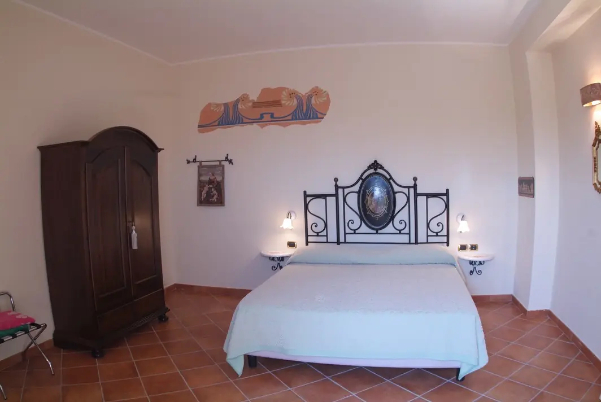
Le camere
Sei camere al primo piano della casa padronale, arredate con mobili di pregio, e tre nella corte. Letto matrimoniale o letti separati, letto aggiunto su richiesta.
da 110 € a notte, colazione compresa
Vedi le camere e i prezziAgriturismo a Botricello · Costa Ionica
Camere nella casa padronale, appartamenti con cucina, una piscina nel verde e una spiaggia privata riservata agli ospiti. In tavola, quello che coltiviamo e alleviamo nei nostri campi.
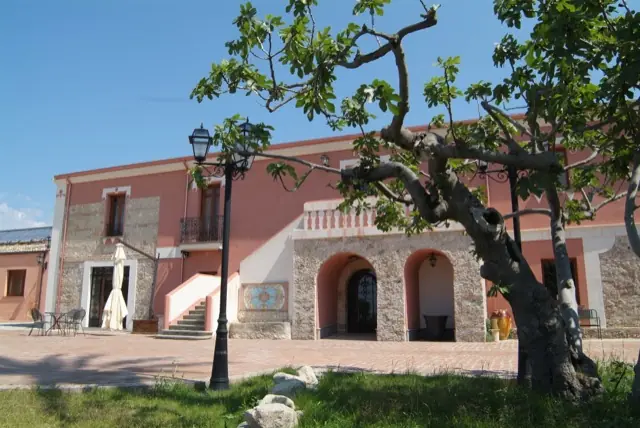
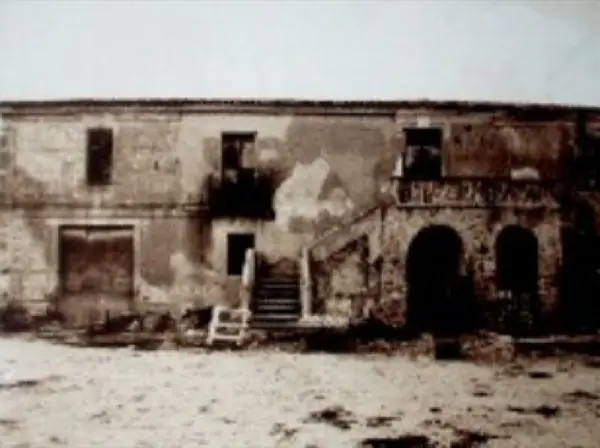
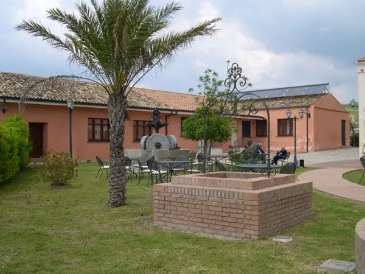
Il borgo
Il complesso nasce dall'antica casa padronale del 1817, dai casali e dai magazzini che le stavano intorno. La famiglia Colucci li ha ristrutturati senza cancellarne il carattere: il cotto, le pietre, gli oggetti agresti, i fiori che arrivano in ogni angolo.
Qui si viene per la quiete. Lontano dai flussi turistici più intensi, ma a pochi minuti dal mare e dai boschi della Sila Piccola.
Dove dormire
Ogni soluzione ha bagno con doccia, aria climatizzata e TV satellitare. Piscina e spiaggia attrezzata sono comprese.

Sei camere al primo piano della casa padronale, arredate con mobili di pregio, e tre nella corte. Letto matrimoniale o letti separati, letto aggiunto su richiesta.
da 110 € a notte, colazione compresa
Vedi le camere e i prezzi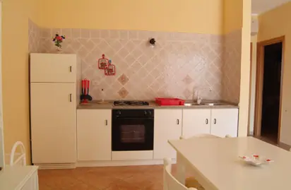
Quattro appartamenti da 2 a 4 persone, con soggiorno, cucina e bagno: la scelta giusta per una settimana di mare in famiglia.
da 650 € a settimana
Vedi gli appartamenti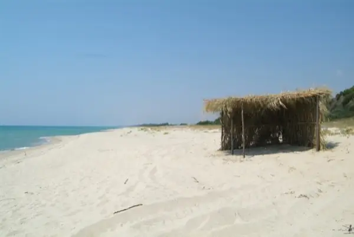
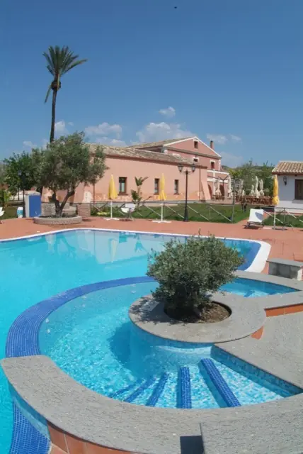
Piscina e spiaggia
Attraversando i campi coltivati, a 4 km dalla casa, si arriva alla nostra spiaggia privata: sabbia, fondale che scende dolcemente, nessun passaggio. Ombrellone, lettino, sdraio e teli li trovate già in camera. All'ombra c'è la frischera, il capanno di canne di una volta.
Piscina e spiaggia sono riservate a chi soggiorna da noi.
Il ristorante
Riproponiamo volentieri piatti regionali diventati ormai introvabili, accanto a ricette di mare e di carne. Verdure, olio e carni arrivano dall'azienda.
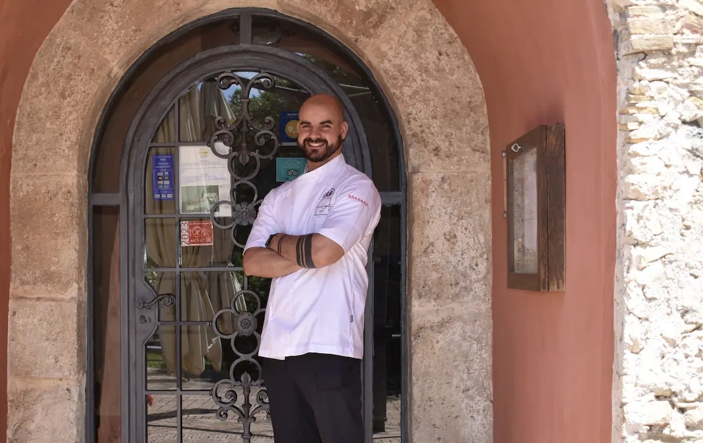
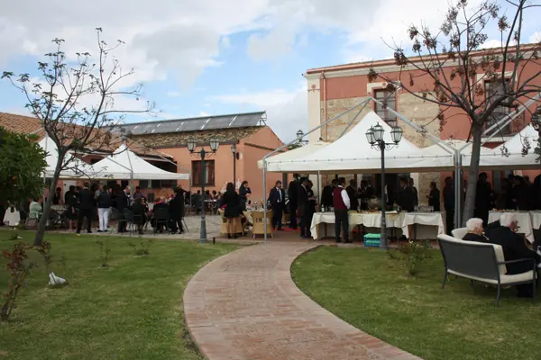
Matrimoni e ricevimenti
Matrimoni, battesimi, comunioni, cresime. La veranda accoglie oltre duecento invitati; ci sono le sale interne, il patio e il solarium a bordo piscina. Forno a legna e barbecue all'aperto.
La cucina è guidata dallo chef Manuel Loprete, la sala dal maître Mariano Mazzei.
Scopri come organizziamo un eventoL'azienda agricola
Intorno alla casa si stendono circa 250 ettari di uliveti, grano, orzo, albicocchi, ceci e asparagi verdi, lavorati con metodi biologici e integrati. Polli, conigli, maiali e vitelli sono allevati qui.
Una parte del raccolto è in vendita: potete portarvi a casa un po' di Calabria, oppure ordinarla per telefono o email e riceverla con spedizione.
Prezzi dal listino attuale, spese di spedizione escluse.
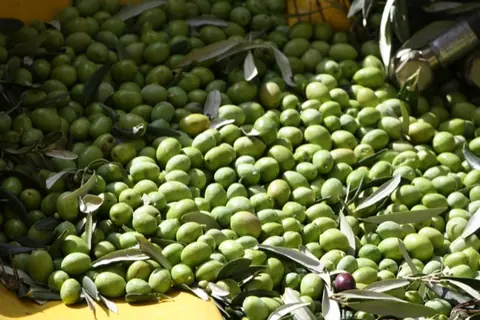
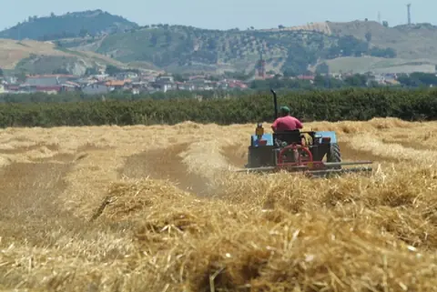
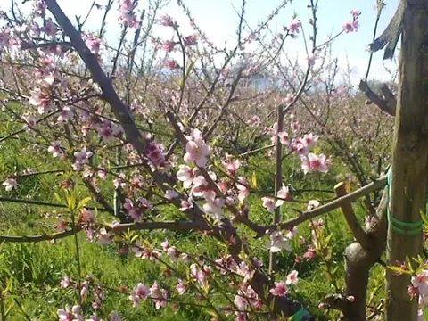
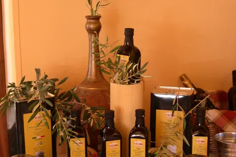
I dintorni
La Magna Grecia è a portata di gita: castelli sul mare, borghi bizantini, templi e boschi secolari.
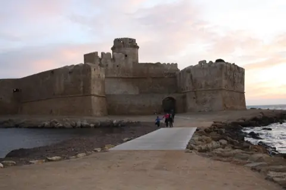
Il castello sull'isolotto e l'area marina protetta.
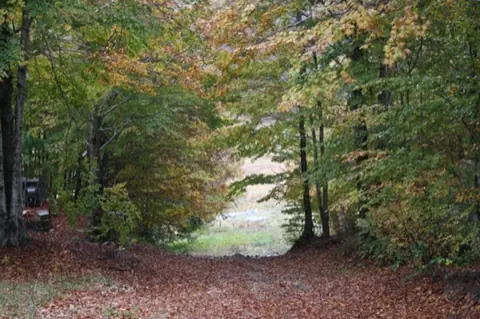
Boschi secolari e passeggiate a oltre mille metri.
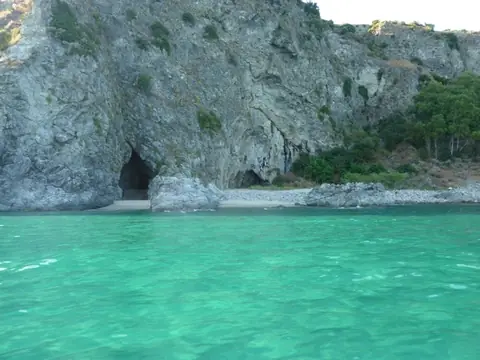
Acque turchesi e spiagge bianche per lunghe passeggiate.
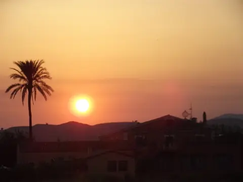
La città di Pitagora e il tempio di Hera Lacinia.
Prenota
Rispondiamo personalmente a ogni richiesta con disponibilità e prezzo. Se preferite, chiamateci o scriveteci su WhatsApp.
Navetta su richiesta da stazioni e aeroporti di Crotone e Lamezia Terme. Promozione 3 giorni con noi: 10 € in meno al giorno per almeno tre notti.
Domande frequenti
Le risposte alle domande che ci fanno più spesso. Per tutto il resto, chiamateci allo 0961 966592.
La spiaggia privata dell'agriturismo è a 4 km, si raggiunge attraversando i campi. È di sabbia, con fondale che scende dolcemente, riservata agli ospiti; ombrellone, lettino, sdraio e teli sono compresi nel prezzo.
Le camere costano da 110 a 240 € a notte per camera, colazione compresa, secondo tipo di camera e stagione. Gli appartamenti con cucina costano da 650 a 1.200 € a settimana. Con la promozione 3 giorni con noi, da tre notti in su, si risparmiano 10 € al giorno.
Sì. La piscina di 14 × 7 metri con idromassaggio e geyser è aperta da maggio a settembre ed è riservata a chi soggiorna in camere e appartamenti.
Dal 22 maggio al 30 settembre il ristorante è aperto tutte le sere a cena; nel resto dell'anno la domenica a pranzo. Banchetti e cerimonie su richiesta tutto l'anno. La cucina è calabrese e mediterranea, con i prodotti dell'azienda agricola.
Sì: matrimoni, battesimi, comunioni e cresime. La veranda accoglie oltre 200 invitati, con sale interne climatizzate, patio, solarium a bordo piscina, forno a legna e barbecue.
L'agriturismo è in via Benigno Zaccagnini 2 a Botricello (CZ), sulla costa ionica tra Catanzaro e Crotone, lungo la SS 106. Gli aeroporti più vicini sono Crotone e Lamezia Terme; su richiesta c'è una navetta da stazioni e aeroporti (Crotone 40 €, Lamezia Terme 65 € per tratta fino a 3 persone).
Fino a 2 anni, in culla o letto aggiunto, i bambini sono gratis. Nelle camere il letto aggiunto oltre i 2 anni costa 30 € al giorno; negli appartamenti da 50 a 200 € a settimana secondo età e stagione.
Come arrivare
A2 fino a Lamezia Terme, poi direzione Catanzaro – Crotone e la SS 106 verso Crotone fino a Botricello. Dopo il municipio girate a destra e seguite i cartelli.
Stazione di Botricello (treni regionali), aeroporti di Crotone e Lamezia Terme. Su richiesta vi veniamo a prendere.